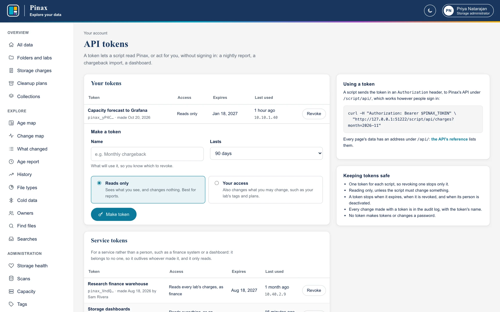
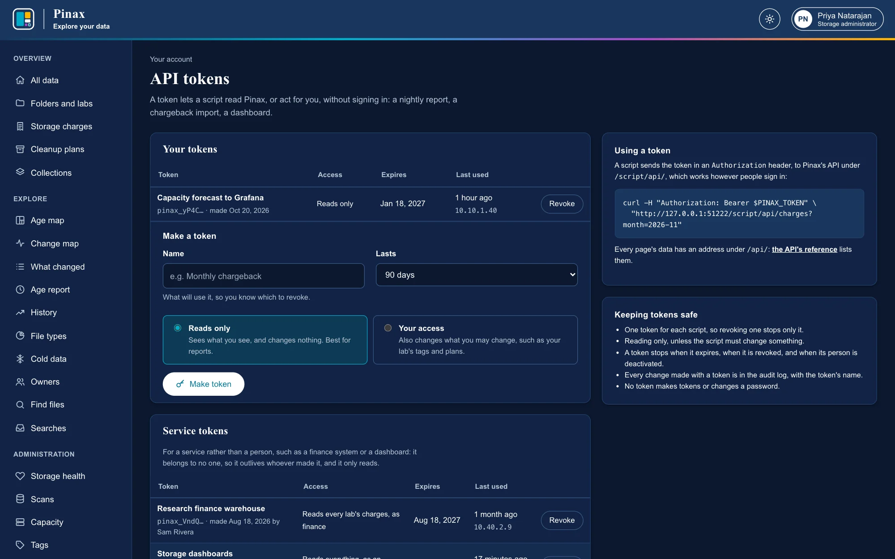

API tokens for scripts
Scripts that read Pinax, or act for you, without signing in: a report, a chargeback import, a dashboard.
A script can read Pinax, or act for you, with an API token instead of signing in: a nightly report of your lab's usage, a monthly import of charges, a dashboard. Choose API tokens from the menu under your name, then Make token:
- Name it for what will use it, such as Weekly usage report, so you know which one to revoke.
- Lasts: from a week to a year (your site may allow less). A token stops working when it expires.
- Reads only (the default) sees what you see and changes nothing. Your access also changes what you may change, such as your lab's tags and cleanup plan; choose it only for a script that must.
Pinax shows the token once: copy it then, and keep it where your script can read it and others cannot, as you would a password (Pinax keeps only a fingerprint of it). A token follows your access as it changes: added to a lab, it sees that lab's folders too. Revoke stops it at once; a new one can be made at any time. Tokens also stop when your account is deactivated. Every change made with a token is in the audit log with the token's name, and the list shows when each was last used, and from where.


A script sends the token in an Authorization header to Pinax's API under /script/api/, which works however your site signs people in (behind single sign-on, only a token gets through there). Every page's data has an address under /api/, listed in the API's reference at /api/docs; put /script in front of it. For example, what your labs are charged this month:
curl -H "Authorization: Bearer $PINAX_TOKEN" "https://pinax.example.org/script/api/charges"And a script that downloads last month's chargeback statement, the CSV that Chargeback downloads, for someone with the finance or auditor role, or for a service token that reads as finance (Service tokens). It uses only Python's standard library:
#!/usr/bin/env python3
"""Download last month's chargeback statement from Pinax: pinax-charges-YYYY-MM.csv."""
import datetime
import os
import sys
import urllib.error
import urllib.request
PINAX = os.environ.get("PINAX_URL", "https://pinax.example.org")
TOKEN = os.environ["PINAX_TOKEN"] # from the environment or a secrets store, never in the script
month = (datetime.date.today().replace(day=1) - datetime.timedelta(days=1)).strftime("%Y-%m") # over, so final
request = urllib.request.Request(f"{PINAX}/script/api/admin/costs/charges?month={month}&fmt=csv",
headers={"Authorization": f"Bearer {TOKEN}"})
try:
with urllib.request.urlopen(request, timeout=300) as response:
statement = response.read()
except urllib.error.HTTPError as e:
sys.exit(f"Pinax answered {e.code}: {e.read().decode(errors='replace')}")
with open(f"pinax-charges-{month}.csv", "wb") as out:
out.write(statement)
print(f"Saved pinax-charges-{month}.csv")